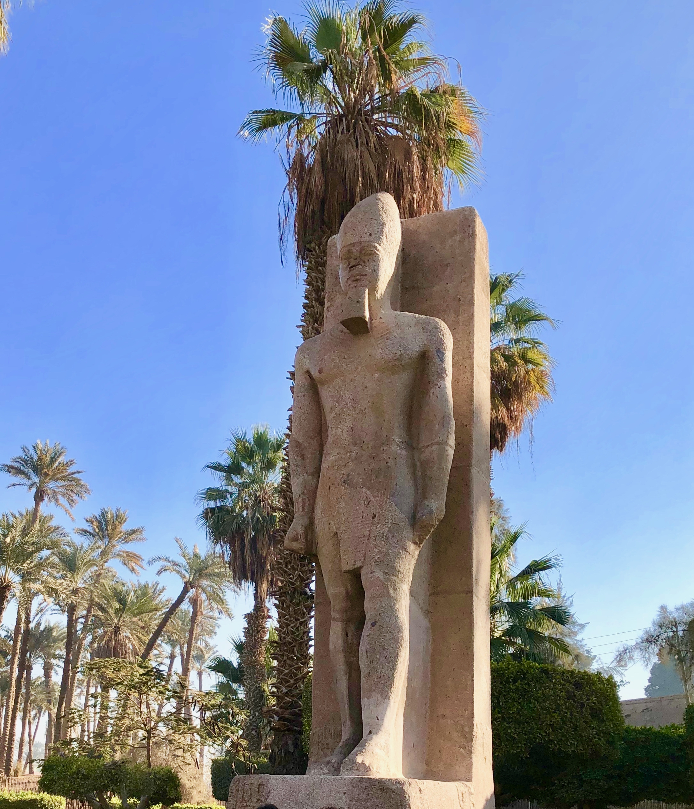

Memphis (Noph)

- Find Name
- Memphis (Noph)
- Description
- The oldest royal capital of united Egypt, on the west bank of the Nile where the valley opens into the Delta, about 20 km south of modern Cairo, at the modern village of Mit Rahina. Tradition credits its founding to Menes around 3000 BC, and for most of three thousand years it was a chief city of Egypt and a centre of the worship of Ptah and the Apis bull. Compared with its cemeteries at Saqqara and Giza, the city itself has yielded few visible remains: Petrie worked the Ptah temple precinct and the palace of Apries, later expeditions found the palace of Merneptah, and the most famous surviving monument is the colossal fallen statue of Ramesses II. The prophets call the city Noph (once Moph in Hosea), eight times in all, chiefly in oracles of judgment against Egypt and in connection with Jews who settled there after Jerusalem's fall.
- Historical Period
- Old Kingdom to Late Period, Egypt
- Evidence Class
- Contextual
- Interpretations
- DOUBT STATED (thin excavation, per brief): the identification of Mit Rahina with biblical Memphis/Noph is broadly accepted, but the city itself is largely gone — its remains are scatters, temple precincts, and palaces, with no excavated structure tied to a specific biblical event, and the Ramesses statue pictured is a general monument of the city, not an object from a biblical episode. Borderline rather than clear for that reason.
- Alternative Names
- Noph; Moph (Hosea 9:6)
- Related Places
- Related Books
- Related People
- Scripture Illuminated
- Biblical Significance
- Memphis is the city the prophets name when Egypt itself is judged: its princes deceived, its idols to cease, its people to bury the fugitives who fled there. The prophets' Memphis is a real capital, not a symbol — but its excavated city remains are thin, and no excavated structure is tied to a specific biblical event, so this entry stays borderline.
- Artifact Date
- Founded c. 3000 BC (tradition); occupied for some 3,000 years
- Current Location
- In situ, Mit Rahina, Egypt (open-air museum; colossal Ramesses II statue on site)
- Date Discovered
- Excavated by Flinders Petrie, 1908-1913 (site identified earlier)
- Discovery Location
- Mit Rahina, Nile Delta, Egypt
- Timeline Era
- Exile
Awaiting Review Not yet checked against scholarly sources. Treat its claims as provisional until this entry is reviewed. About verification
Last reviewed: not yet reviewed